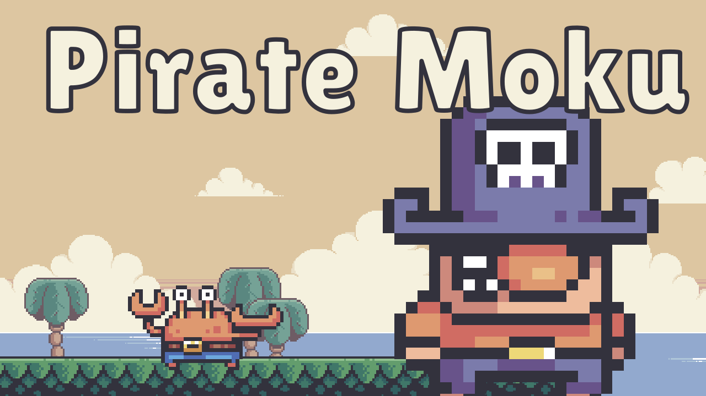
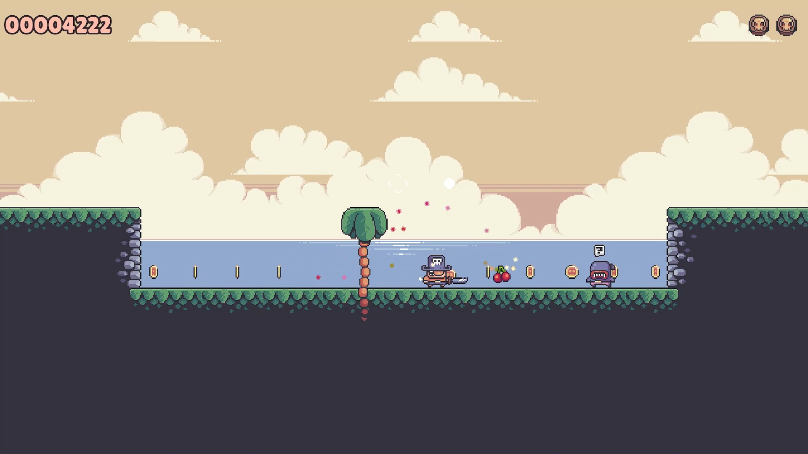
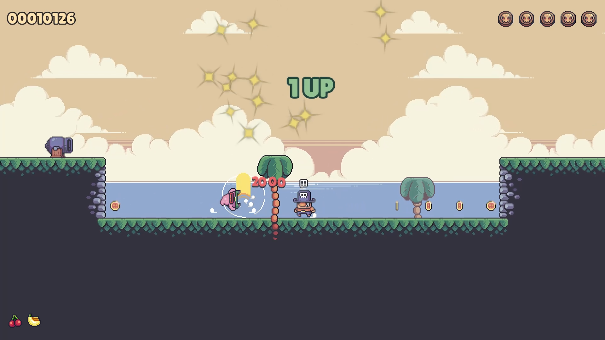
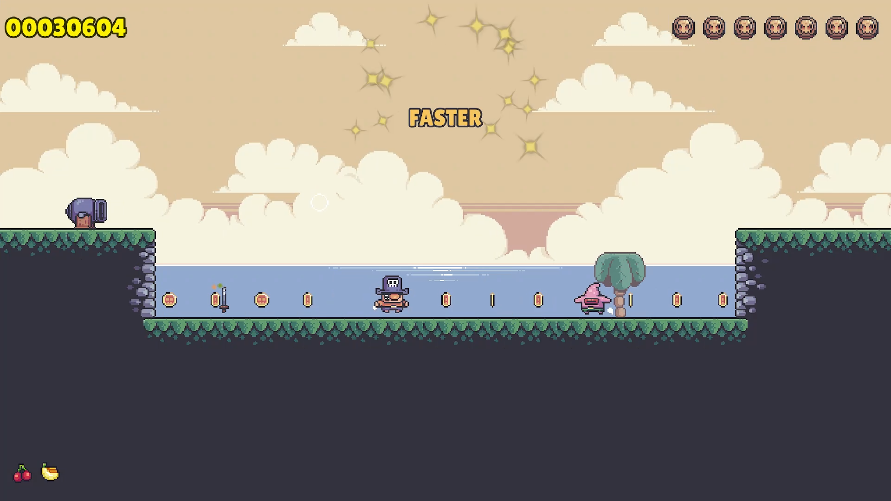
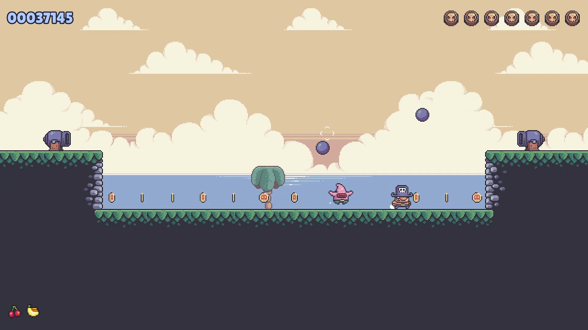
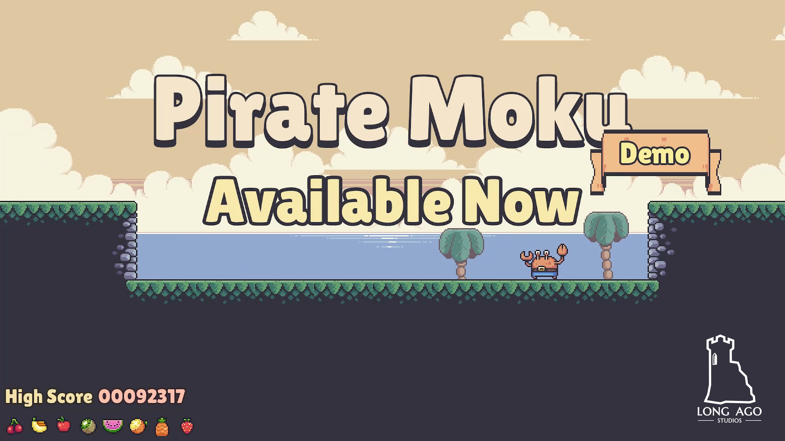

Pirate Moku is a one-button game. Push any button to change directions. Collect the coins to clear the level. Grab the sword, and defeat the monsters until time runs out. Watch out for the cannons. Eat fruit.
A run lasts until you run out of lives. Get the high-score and see how many pieces of fruit you can collect.





Free. Play in your browser.